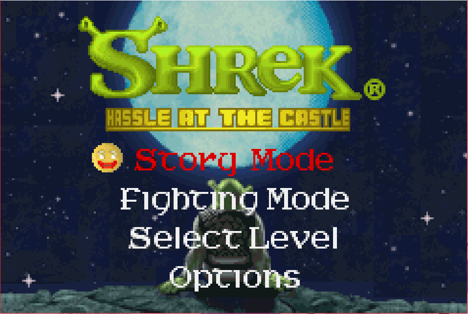

Shrek: Hassle at the Castle

Complete on 2018-04-8
2 / 5
Release Date: Oct 10, 2002
Meta Score: 71
Screenshots


Notes
I feel like everyone knows about Shrek. If you were living under a rock in the early 2000s, it was a very popular Dreamworks animated film, about an ogre named Shrek rescuing a princess.This game adaptation is an action platformer, which follows the story of the first film quite closely.
Gameplay is a simple platformer. You can run, jump, and punch. Running requires you to keep holding the punch button after the punch, and is essential for a lot of the platforming after the first few levels. Speaking of which, the platforming is annoying, mainly because of the unclear hitboxes of the characters and platforms.
There's a fair bit of fighting. The punch is just a single punch, there are no combos or anything fancy. You also have a screen-clearing special attack on a meter which charges up.
You can play as several different characters (Shrek, Donkey, and Fiona), but they are all just reskins, they don't play differently.
Each level has an objective, which is usually a combination of running right and punching stuff. There's one NPC escort mission, just to really spice things up. There are a few bosses, which range from pretty simple to aggravating. The hardest level was the timed escape from the castle, being chased by the dragon. This was just due to awkward platforming while having to dodge fireballs on quite limited health.
Nothing in Shrek is really egregiously bad, but the whole game feels limp and uninspired. Nothing made me really hate it, but nothing was really fun and engaging either. Just a mediocre lump. I finished normal difficulty. I only got the following screen instead of credits, but I wasn't about to slog through a harder mode after that.